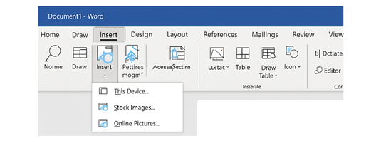

Bine ați venit într-un loc unde puteți învăța funcționalitățile de bază din Microsoft Word!
- Deschide documentul Word.
- Mergi la bara de sus și apasă pe „Insert” (Inserare).
- Alege opțiunea „Pictures” (Imagini).
- Selectează „This Device” pentru a alege o imagine din calculatorul tău.
- Imaginea va apărea în document. O poți redimensiona sau muta cum vrei.
